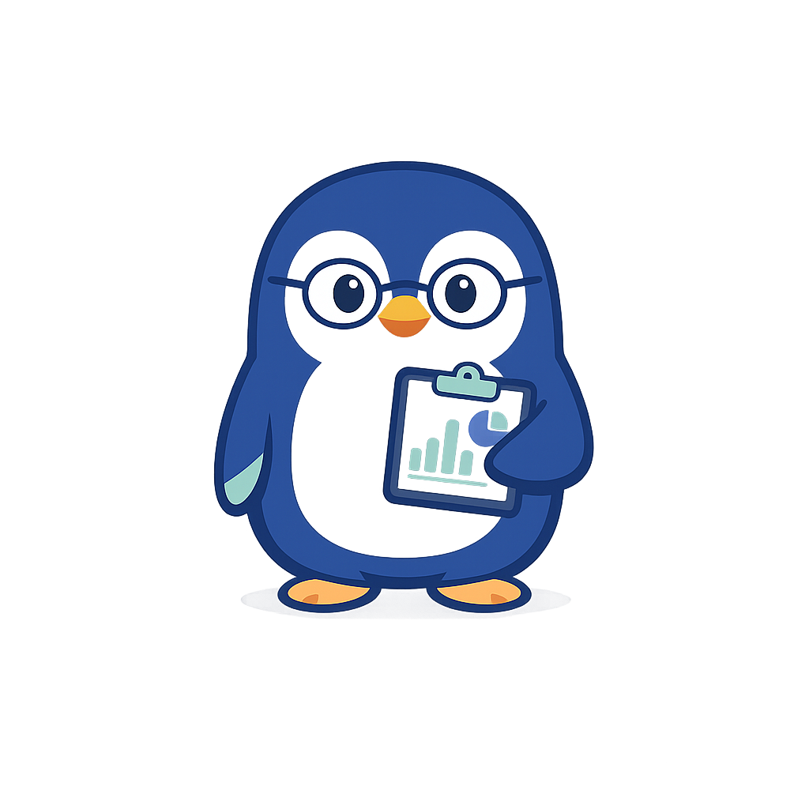

AI 활용 웹툴

경력기술서 bullet 변환기
Penguin Career Lab
역할 설명 위주의 경력기술서 문장을 성과 중심 bullet로 바꿔주는 무료 웹툴입니다.
이직용 이력서, 경력기술서, 프로젝트 경험 정리를 더 명확하고 설득력 있게 만들 때 유용합니다.
0
글자 수
0
문장 수
0
bullet 수
0
설득력 점수
개선 포인트
아직 생성된 내용이 없습니다.
경력기술서 bullet
아직 생성된 내용이 없습니다.
AI 프롬프트
아직 생성된 프롬프트가 없습니다.
경력기술서 bullet 잘 쓰는 팁
- “무엇을 했다”보다 “어떤 문제를 해결했고 어떤 결과가 나왔는지”가 더 중요합니다.
- 가능하면 수치, 기간, 팀 규모, 전환율, 비용 절감 같은 정보가 들어가면 좋습니다.
- 한 bullet에는 한 메시지만 남기면 읽는 사람이 훨씬 빠르게 이해합니다.
티스토리 글에는 이 툴 아래에 "경력기술서 예시", "성과 중심 이력서 문장", "bullet 작성법"을 함께 넣으면 검색 유입에 더 유리합니다.